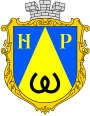

Місто Новий Розділ належить до наймолодших міст Львівської області. Засноване у 1953 році у зв'язку з освоєнням великого родовища самородної сірки біля старовинного селища Розділ. Має свій герб та прапор, які затверджено 12 червня 1991 року і внесено у геральдичні каталоги України.
Місто розташоване на лівобережному дністровському схилі на висоті 290 м над рівнем моря, на стику Опілля і Передкарпатського прогину.
Через Новий Розділ проходить шосейна дорога Миколаїв — Ходорів.
До автомагістралі Львів — Стрий — 15 км. Відстань до м. Львів — 54 км, м. Миколаїв — адміністративного центру Миколаївського району — 19 км, до м. Ходорів — 18 км, м. Жидачів — 27 км. Залізнична колія Ходорів — Новий Розділ, збудована у 1958 році, забезпечувала вантажні залізничні перевезення, проте на початку 2000-х її було закрито, а 2011 остаточно розібрано. Пряме автомобільне сполучення пов'язує місто Новий Розділ з обласним центром Львів, іншими населеними пунктами Львівської, Тернопільської, Івано-Франківської, Волинської областей та з Польщею.
Станом на 2018 рік міським головою працює Мелешко Андрій Романович.
Герб міста

111